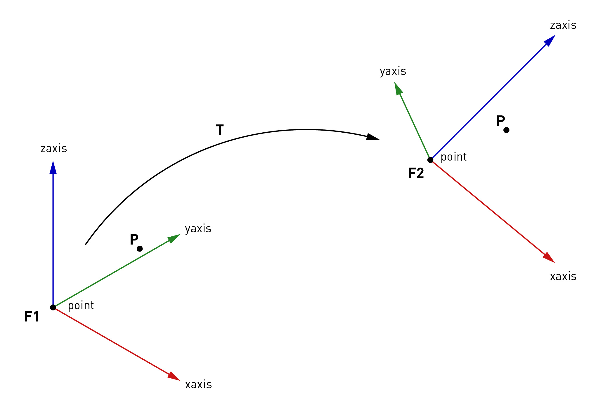

Frame and Transformation
Frame and Transformation are two basic classes in the
COMPAS framework and can be used to describe position/orientation and
coordinate systems. The Frame consists of a point and and two
orthonormal base vectors (xaxis, yaxis). Transformation is the base
class for transformations like Rotation, Translation,
Scale, Reflection, Projection and Shear.
Here is a simple example of how to use Frame and Transformation: We want to
bring a point P in the coordinate system of frame F1 into the
coordinate system of frame F2.
from compas.geometry import Point
from compas.geometry import Frame
from compas.geometry.xforms import Transformation
point = [0.0, 0.0, 63.0]
xaxis = [1.0, 0.0, 0.0]
yaxis = [0.0, 1.0, 0.0]
F1 = Frame(point, xaxis, yaxis)
point = [146.00, 150.00, 161.50]
xaxis = [0.9767, 0.0010, -0.214]
yaxis = [0.1002, 0.8818, 0.4609]
F2 = Frame(point, xaxis, yaxis)
P = Point(35., 35., 35.) # point in frame F1
# bring P into worldXY frame.
Tw = Transformation.from_frame_to_frame(Frame.worldXY(), F1)
Pw = P.transformed(Tw)
# bring Pw into frame F2
T = Transformation.from_frame_to_frame(F1, F2)
Pt1 = Pw.transformed(T)
print(Pt1)
# This here yields to the same result
Pt2 = F2.represent_frame_in_global_coordinates(P)
print(Pt2)

From the frame, or resp. from the orientation (Rotation) of the frame,
several other representations of rotation can be derived, such
as Euler angles, axis-angle representation, and quaternion.
from compas.geometry import Frame
from compas.geometry.xforms import Rotation
F1 = Frame([0, 0, 0], [0.68, 0.68, 0.27], [-0.67, 0.73, -0.15])
# euler angles
args = False, 'xyz'
alpha, beta, gamma = F1.euler_angles(*args)
# check if angles are correct
xaxis, yaxis, zaxis = [1, 0, 0], [0, 1, 0], [0, 0, 1]
Rx = Rotation.from_axis_and_angle(xaxis, alpha)
Ry = Rotation.from_axis_and_angle(yaxis, beta)
Rz = Rotation.from_axis_and_angle(zaxis, gamma)
F2 = Frame.worldXY()
print('Are equal?', F1 == F2.transformed(Rx * Ry * Rz))
# quaternion
q = F1.quaternion
F2 = Frame.from_quaternion(q)
print('Are equal?', F1 == F2)
# axis-angle
ax = F1.axis_angle_vector
F2 = Frame.from_axis_angle_vector(ax)
print('Are equal?', F1 == F2)